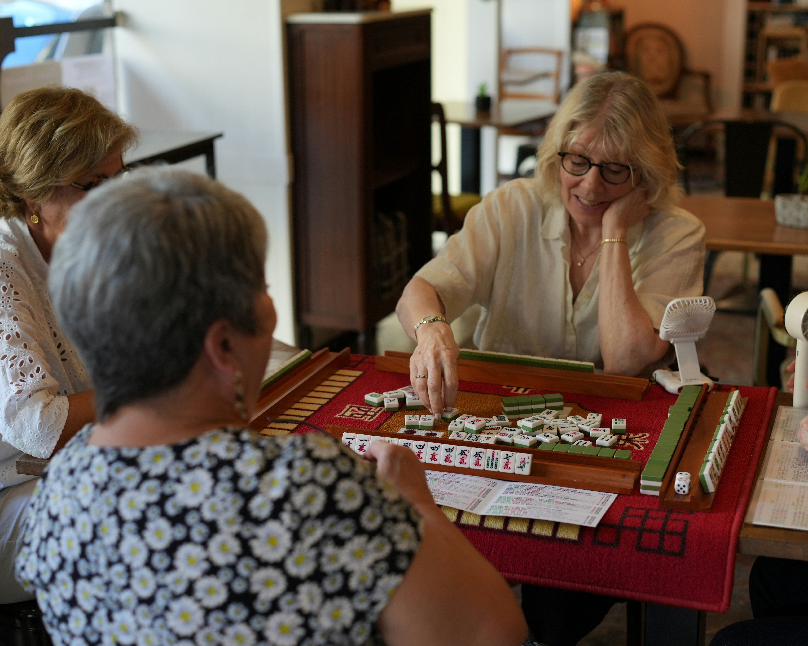
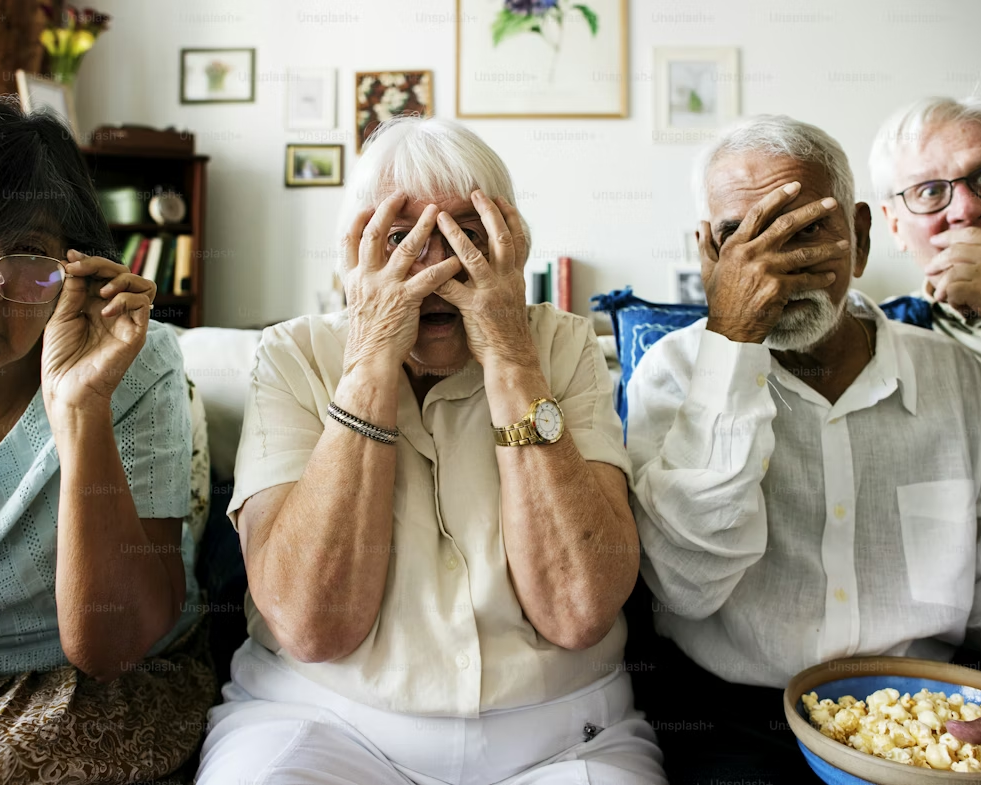
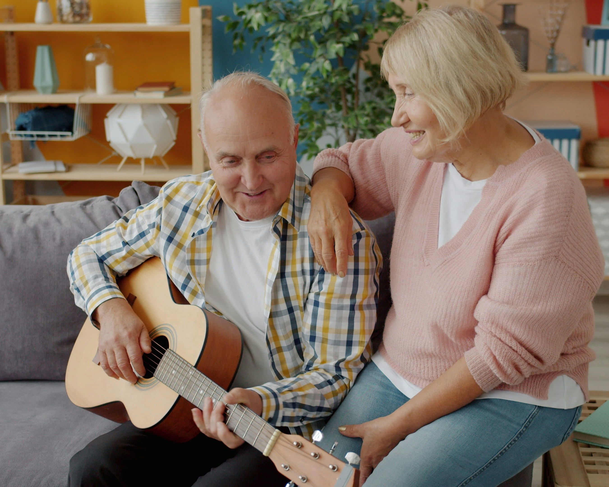
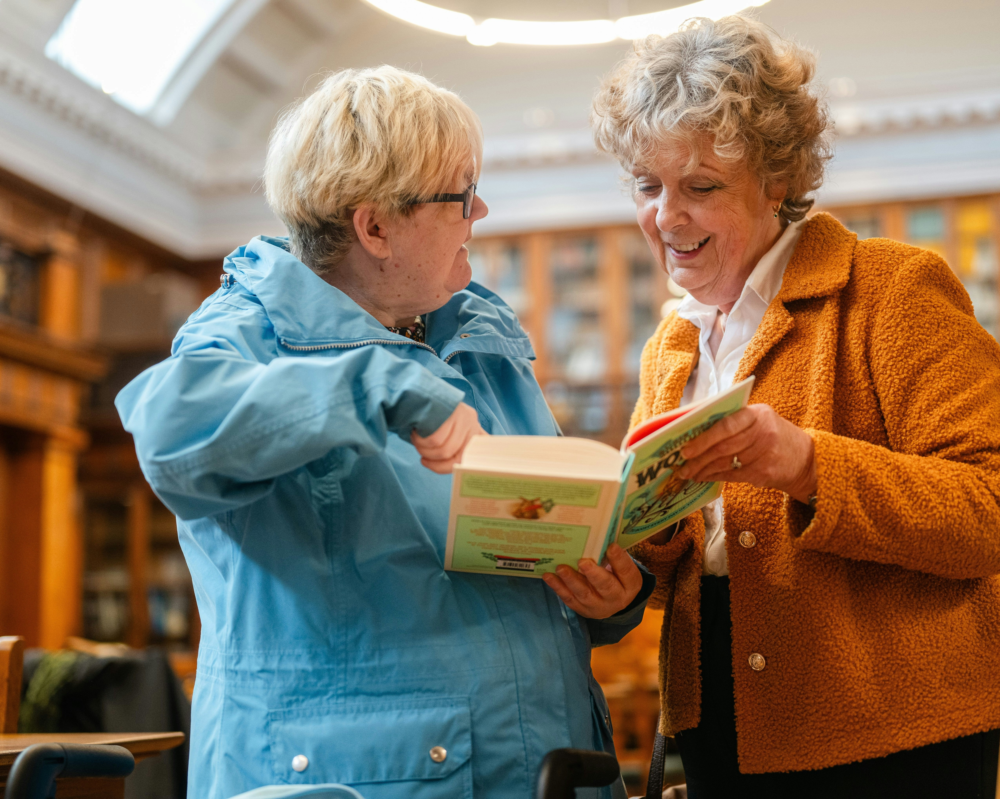
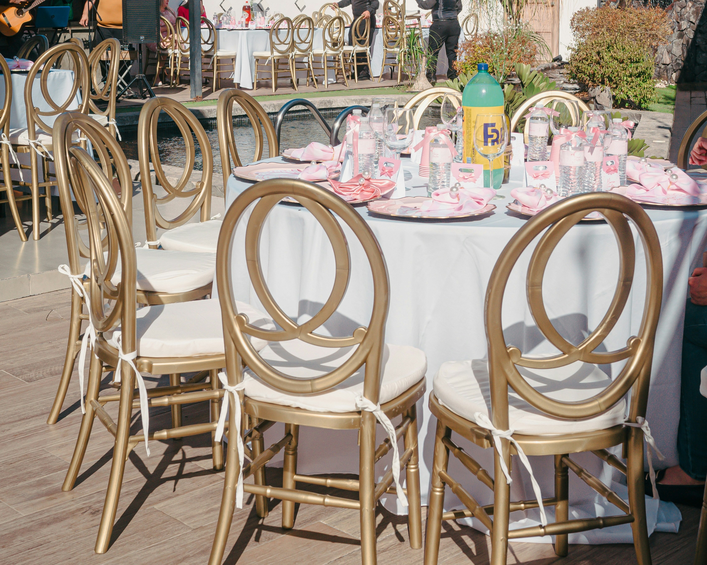

Most Popular Activites
Sport
We don’t often associate the word “sports” with “seniors.” But if you’re an older adult, aging doesn’t mean you have to retire your cleats or hang up your hat.
Read MoreTourisme
Seniors tourism is predicted to be a major force in the 21st century as populations age. While seniors are as diverse as any other demographic sector, and many seniors do not have the resources to travel.
Read MoreYoga
In today’s popular culture, fitness is defined in quite narrow terms. We tend to view fitness primarily as an aesthetic pursuit. It’s about looking good! Some focus on “functional fitness” and “functional movement”
Read MoreOther exciting events
Coocking Class
We believe that the joy of cooking is timeless. Our classes our designed to help you rediscover the pleasures of creating delicious meals, all while fostering a sense of community and well-being.

Art & Painting
Art and the elderly share a powerful connection that can significantly enhance quality of life. By stimulating creativity, improving mental health, and fostering meaningful social connections, art provides older adults with a unique opportunity for personal expression and emotional well-being.

Board Games
The touch and feel of physical tokens, dice, or cards and the gathering of people together to pursue the simple joys of play can be great for all ages, but especially seniors. Board games foster meaningful connections with loved ones, stimulate the brain to stay sharp, and create moments of laughter and joy.

Movie Afternoon
Come and join a free movie afternoon at SOTB. The movie will be “Big Fish” and it is a story of a son and a father who reconnect after the father falls ill. Feel free to stay after the movie for a panel discussion with local community members and professionals who have experience with the themes explored during the movie.

Music Club
Music Share aims to create moments of joy for seniors facing physical or mental health challenges. Our trained facilitators lead in-person listening sessions, using individually curated playlists to spark memories, foster connection, and empower residents to engage with the music they love.

Reading Clib
For seniors at VRS Communities, participating in a book club is more than just a leisurely pursuit; it’s a gateway to a world of knowledge, imagination, and discovery. Engaging with literature on a regular basis has been shown to have numerous cognitive benefits,
Special Events

what we offer
We celebrate each resident’s birthday with joy and care. Our team organizes a small party including cake, music, and decorations to make the day special.
- Personalized birthday cake
- Music and entertainment
- Decorations and gifts
- Group celebration with friends
book Your own special events
If you would like to organize your own special event, we are happy to help. Simply tell us what you need using the form below